第10天：符号表之变量管理
第10天：符号表之变量管理
前面我们完成了语法分析。
复习一下，语法分析的任务是：接受一个终结符号串作为输入，找出从文法的开始符号推导出这个串的方法；如果推导不出来，就报告语法错误。
前面的文章也多处提到，对于语法分析做不了的或者不方便做的，可以延后到语义分析解决。
例如下面的代码：
1 | |
前面我们构造的函数参数列表的产生式为：
<para_decl> -> void | <para_item> <para_list> | ε
<para_item> -> <type> ident <arr_len> | <type> mul ident <arr_len>
我们完全可以把这里的 <type> 修改为
并且让 <para_type> -> int | char
这样第 6 行的错误，在语法分析阶段就可以发现。
但是我觉得这样做有点复杂，又是<type> 又是<para_type>，容易混淆。再说，万一哪天要给 csub 增加 void 类型的指针，是不是这个
所以，我把第 6 行的错误延后到语义分析阶段处理。
但是，还有一种情况，就是语法分析根本就做不了，只能放在语义分析阶段做。
从 0 型文法到 3 型文法
复习一下前文讲的形式化文法。
一个形式化文法通常由一个四元组定义：
N：非终结符集合。表示语法结构的中间变量，用尖括号或大写字母表示。
T：终结符集合：语言的基本符号，无法再分解，比如前面词法分析得到的各种 token。注意：非终结符和终结符没有交集。
P：产生式集合。描述替换规则，定义了如何从非终结符出发，逐步推导出合法的终结符号串。形式：
α -> β（读作：α 能推导出 β）。α是一个包含至少一个非终结符的符号串。β是由终结符和非终结符组成的任意符号串（包括空串 ε）。S：开始符号。指定一个非终结符号为开始符号，是整个推导过程的起点。
形式化文法是一个大家族，此家族有 4 个成员：0 型文法（无限制文法）、1 型文法（上下文有关文法）、2 型文法（上下文无关文法，CFG）和 3 型文法（正则文法）。
从 0 到 3，文法描述能力依次减弱。
0 型文法，产生式形如α -> β，其中α和β是任意符号串，但α不能为空串。任何计算机能计算的问题，它都能描述。但也因为过于强大，难以用于实践分析。
1 型文法，产生式形如αAγ -> αβγ。规则 A -> β只能在左侧上下文是 α、右侧上下文是 γ的情况下应用。描述能力弱于 0 型，但强于 2 型。可以描述像 {aⁿbⁿcⁿ | n ≥ 1}（相同数量的 a、b、c）这类上下文无关文法无法描述的语言。
2 型文法，产生式形如A -> β。规则的左侧必须只有一个非终结符，并且可以在任何上下文中被替换为β。它是实践中最有用、最广泛的一类文法，能高效地描述编程语言中大量的嵌套结构。
3 型文法，产生式形如A -> a或 A -> aB（右线性）。规则右侧最多只能有一个非终结符，并且必须出现在最左或最右。描述能力最弱。它描述的语言可以被有限状态自动机识别，常用于描述词法模式（如标识符、数字、关键字）。
前面我们为 csub 构造文法的时候，准确讲是构造 2 型文法(上下文无关文法） 。因为我们定义的产生式，左部仅有一个非终结符，并且可以在任何上下文中被替换为右部。
因为上下文无关，所以在语法分析“a = b;”的时候，无法回答变量 a 或者 b 是不是已经定义或声明，也无法回答 foo(a, b, c);的实参列表和函数定义时指定的形参列表是否一致。这些问题都牵扯到了上下文，是语法分析阶段做不了的。所以，必须做语义分析。
有的读者迫不及待，说我们赶快做语义分析吧。
别着急，我们先做符号表管理。因为刚才提到的两个问题，都需要查符号表。
在语法分析阶段，我们为每一个非终结符编写了一个函数，接下来要在函数里面执行符号表管理、语义分析和代码生成的工作，这就是“语法制导”。
如果把前面写的代码比喻成编译器的骨架，那后面要做的符号表管理、语义分析和代码生成，就是为这个骨架增加肌肉。
符号表
在语义分析阶段，针对代码
a = b;
首先要查符号表，看看 a 和 b 这两个变量是否定义或声明，如果没有，那就报错。如果有定义或声明，还要看看类型是否兼容，假如 b 是指针， a 是 int，这样赋值肯定是不合法的。所以，当变量定义或者声明的时候，要把变量的名字、类型等信息加入符号表，这样才有据可查。
同理，遇到代码
foo(1,2);
也要查符号表，看看 foo 这个函数定义或者声明了没有，如果没有就报错。如果有定义或声明，还要看这个函数有几个参数，是不是 2 个，是不是都是整形。所以，遇到函数定义或者声明，要把函数的名字、返回类型、参数个数和类型等信息加入符号表。
再比如，遇到代码：
char arr[] = “hello world”;
“hello world” 这个字符串，也要保存到符号表，否则，遇到表达式 arr[3]++ 如何处理？ 遇到函数 print_str(arr);如何处理？
还有，请看下面的代码：
1 | |
请问第 6 行的变量 a 是哪个 a 呢？是第 1 行定义的还是第 4 行定义的？
这也需要查符号表，按照名字“a”查找变量，然后对比作用域，根据同名变量的“就近原则”，解析出是第 4 行定义的变量 a
为了提高查找速度，很容易联想到我们前面学习的哈希表。
csub 设计了三个哈希表，分别是变量表、函数表还有字符串表。我们可以定义一个结构体，把这三个表管理起来。
1 | |
上面是结构体 sym_table_t 的定义。
复习一下哈希表学的内容，
1 | |
所以，上面的代码展开后是
1 | |
2 ~ 4 行代表 3 个哈希表，分别用来保存变量、函数和字符串常量，我叫它们变量表、函数表和串表。我们把这三个表统称为符号表。
至于每个哈希表有多少个桶，暂定 32 个，后面可以根据需要调整。
第 5~8 行是统计信息，为了调试方便。
第 9 行，定义了一个链表的头节点，叫 var_tab_head，至于这个链表有什么用，后面会讲。
第 10 行，用来记录当前的作用域，这个在上一节已经说过了。
我们还需要定义一个 sym_table_t 类型的全局变量，并且编写初始化函数：
1 | |
第 5 行，把每个字段都清零。这也达到了初始化哈希表的目的，因为
1 | |
所以初始化哈希表的本质是把数组每个元素的 first 字段赋值为 NULL（空指针），而空指针的底层二进制表示为全零。
第 6 行，初始化链表 var_tab_head；
第 7~8 是和作用域相关的内容，之前讲过。
这样，我们就有 3 个空的哈希表了，还有 1 个空的叫 var_tab_head 的链表。
var_t
为了把变量存入哈希表，我们要为变量设计一个结构体，此结构体可以描述所有的变量，也包括常量。
1 | |
这里面的字段很多，我们挑重点说。
第 1 行struct hlist_node hnode;这是哈希表节点，为了把变量加入哈希表，必须有它。至于 hnode 只是一个名字，你换成其他的也可以。
第 6 行，如果是常量，也用这个结构体保存，但是 is_literal 为 true；是不是常量，看这个字段就可以。
第 9 行，支持的类型是 int 和 char，如果是 void, 这肯定是一个无效的变量。（不过以后要是增加了 void 类型的指针，这个，以后再说吧）
第 12 、13 行，仅对数组有用。
第 13 行，定义了一个链表的头节点，叫arr_init_val; 当变量是数组，且使用... ={1，2，3};这种初始化形式的时候，这个字段才有意义。此链表用于保存初始化列表中的元素。
第 14 行，如果变量定义的时候有初始化，则 init_val 不为空，它会指向另一个 struct var_info；要是没有初始化，这个字段是 NULL；
15~19 是一个匿名联合体，用来存储常量的值，int_val 用来存储整形常量的值，char_val 用来存储字符常量的值；
string_val 用来存储一个指针，这个指针指向一片内存，里面存储的是字符串常量。
第 20 行是出错标记，这个马上就会讲到。
第 21 行用来记录变量定义位置的行号，为了报错用。
光有 var_t 这个结构体还不行，还需要有创建变量的代码。
因为 var_t 仅仅是一个我们定义的类型。这就好比光有 int 关键字还不够，你要写 int a;才能得到一个整形变量一样。
new_var
讲解这个函数之前，先补一下之前的代码窟窿。
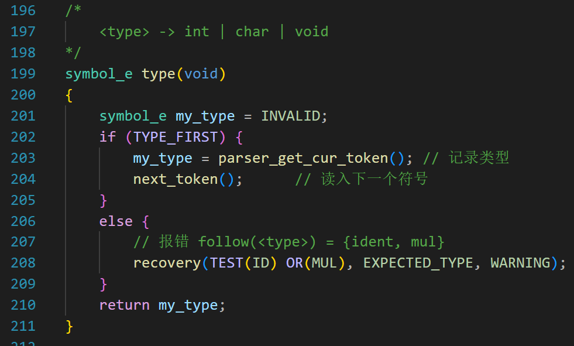
以前第 201 行的 INVALID 是 INT，也就是默认整形。
但是我现在觉得不妥，如果默认是整形，那么就算是类型遗漏了（会执行第 208 行），此时返回的也是 INT；调用这个函数的代码并不知道出错了，还以为确实是 INT 类型呢。现在我把 201 行改成 INVALID，这样调用者就能知道出错了。
下面是 new_var 的代码。
这个函数用来创建并初始化变量（int 或 char 类型，也可以是int 或 char 类型的指针），但不能是数组（我们会用另外一个函数创建数组）。
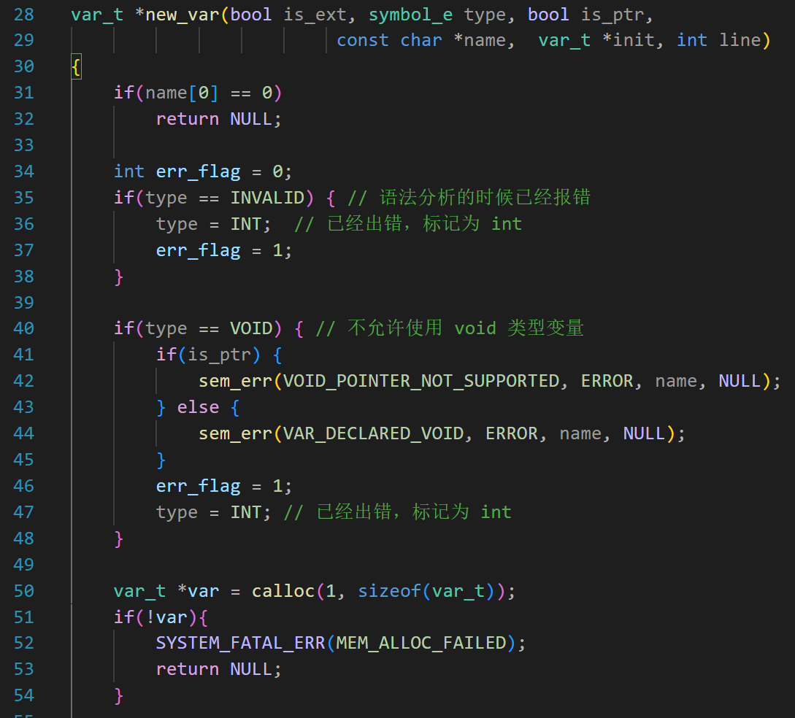
第 31 行，如果语法分析的时候缺少标识符，name 指向的数组就是全零。所以一旦发现 name[0] 为 0，就说明前面的语法分析出错了，连标识符都没有。
既然没有名字，就返回 NULL 吧，因为我实在没有办法把一个没有名字的变量加入哈希表。
第 34 行，定义一个叫 err_flag 的变量，用来表示语法分析是否出错。
第 35 行，遗漏了类型，标记 err_flag 为1；
第 40~48 行，发现是 void 类型，或者 void *，都属于错误情况，报错，把 err_flag 置 1，也把 type 强行设置成 INT，不然后面计算变量大小就比较难办。
有的读者会问，既然都出错了，那为何不直接返回 NULL 呢？
这是一个好问题。我之前也是这么想的。但是请看下面的代码：
1 | |
第 1 行，忘了写 a 的类型了。
当解析到 a 的时候，发现类型是 INVALID，如果在 new_var 函数里面返回 NULL，那么就无法把变量 a 加入符号表。
解析第 4 行的时候，再遇到 a，就会找不到符号，会报更多的错误。
所以，我决定即使类型是 INVALID，也要把 a 加入变量表，但是我会做一个标记，就是 err_flag;
我们回到代码。第 50~54 行分配内存并检查内存的有效性。
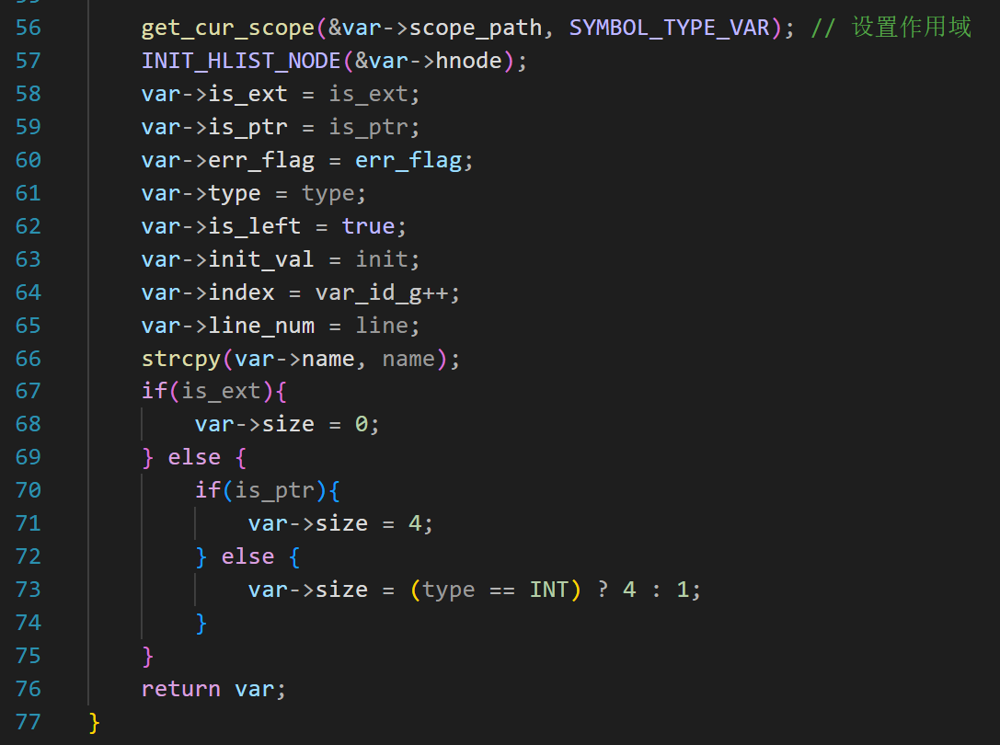
第 56 行，设置变量的作用域。
第 57 行，初始化哈希表节点 hnode; INIT_HLIST_NODE 是一个宏
1 | |
有读者问，不初始化可以吗？
答案是非常有必要初始化。请看下面的代码：
1 | |
判断一个节点不在哈希表中的依据是 h->pprev 等于 NULL；如果不初始化，那么调用 hlist_unhashed 可能回返回错误的结果。
还有的读者说，第 46 行的 calloc 函数已经把内存清零了，所以第 57 行可以没有。这是对的，但是为了增加代码可读性，还是加上比较好。
第 62 行，设置 is_left 为真，表示是左值。左值是指可以出现在赋值表达式左侧的表达式。
第 64 行，var_id_g 是一个从 0 开始的全局变量，每创建一个变量就增加 1，方便调试。
第 67 行，如果是 extern 类型的变量，它是在其他文件定义的，本文件不为它分配存储空间，所以 size 为 0；否则要计算变量的大小。
70~74：如果是指针，大小是 4 字节。因为我们要编译出的程序的运行环境是32 位 Linux 系统，所以指针占 4 字节。
因为我们仅支持 int 和 char 类型，所以变量的大小是 4 字节或者 1 字节。
new_arr
我们趁热打铁，看看 new_arr 这个函数。
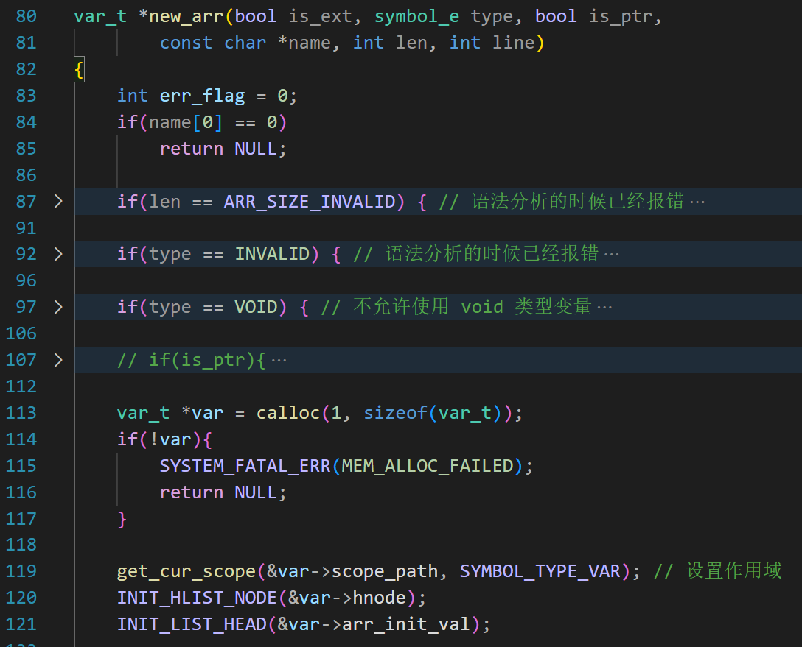
错误处理和前面的 new_var 函数类似，这里不赘述。
第 121 行，初始化链表，arr_init_val 这个字段是专门为数组设计的。这个链表怎么用，后文会讲。
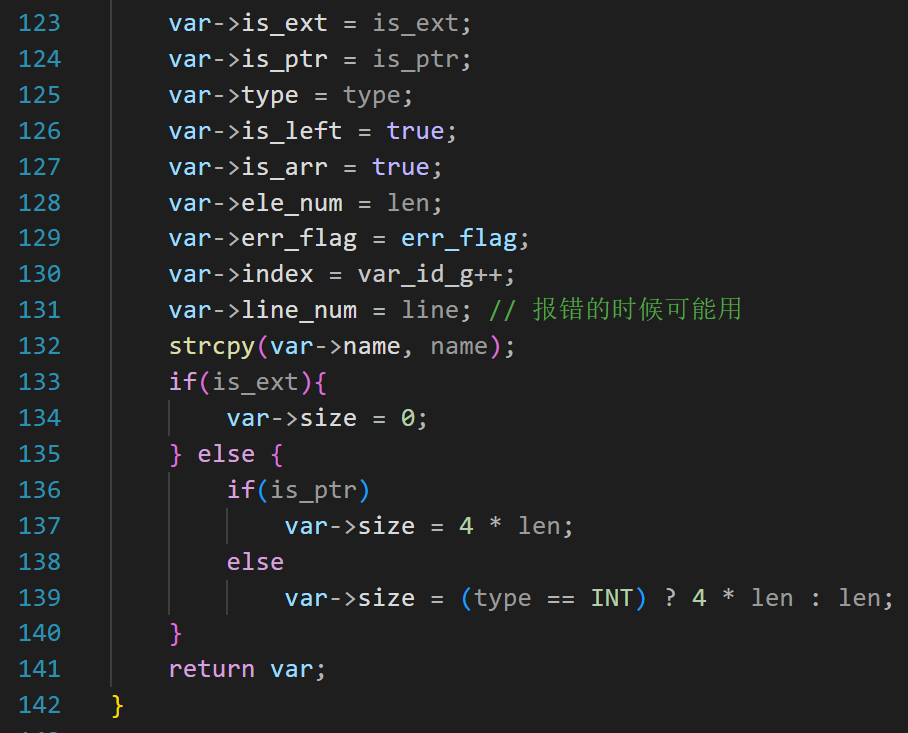
第 127 行，把 is_arr 设置为 true,说明这是一个数组。 is_arr 为 ture 是判断变量是数组的依据。
第 128 行，记录元素的个数。注意，传入的参数 len 可能等于 ARR_SIZE_UNKNOWN ，如果有初始化，会修正 var->ele_num 和 var->size，后文会讲。
new_literal
不仅需要创建变量，还需要创建常量。例如：
1 | |
这个 x 已经用 var_t 结构保存起来了，var_t 中有个字段是 struct var_info *init_val;这是一个指针，指向另一个 var_t（这里面存储着 x 的初始值）。
所以，需要把 10 也存储到 var_t 结构体中，然后把它的地址赋值给 init_val；
创建常量的函数是 new_literal
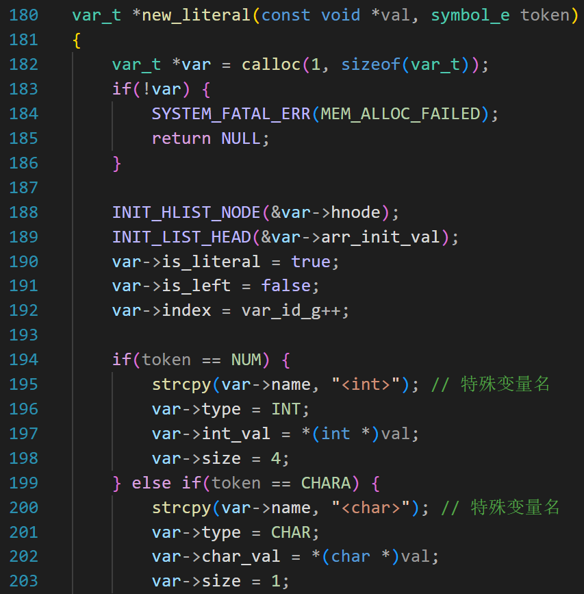
这个函数的作用是存储常量，例如 100， ‘x’, “hello”；
注意，常量不需要保存作用域。
第一个参数 val 是指向常量的指针，第二个参数是 token 的值，只有 NUM、CHARA、STRING 这三种。
因为是常量，所以 190 行的 is_literal 是 true;第191 的 is_left 是 false，因为常量不能出现在赋值运算符的左边，例如 4 = a; 这是荒谬的。
对于整形常量和字符常量，是没有变量名的，不过我们可以给它们一个特殊的变量名，整形常量统一叫 “<int>”,字符常量统一叫“<char>”;
这就是第 195 行和第 200 行的意思。
var_t 类型中有一个匿名联合体，用来存储常量的值。例如第 197 行和第 202 行。
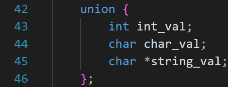
如果是整形常量或者字符常量，可以直接存储到这个联合体里面，要是字符串常量，就需要分配内存，然后让 string_val 指向这段内存。
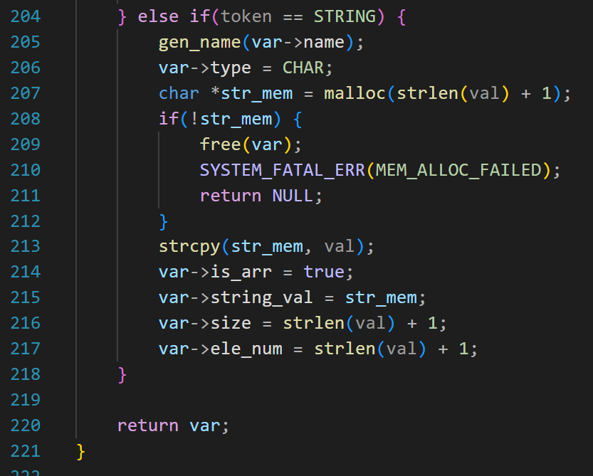
字符串常量也没有名字，但是我们不能给它们指定一个统一的名字，而是要给每个字符串创建一个独一无二的名字。至于为什么，读者现在不用关心，等学到后面自然会明白。
第 205 行，调用 gen_name 生成一个唯一的名字。这个函数后面会说。
第 207 行为字符串分配存储空间，第 213 行拷贝字符串到分配好的空间里。第 215 行，让 string_val 指向这个空间。
我们把字符串作为字符数组存储，所以第 206 行的类型是 CHAR；第 214 行的 is_arr 是 ture;
gen_name 函数的代码如下：
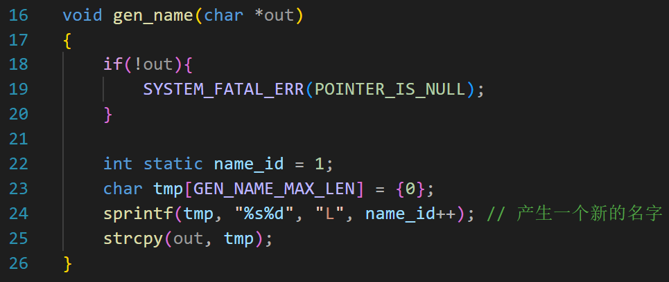
第 22 行的 name_id，是一个 static 类型的变量，表示它具有静态存储期，仅初始化一次，而且是在程序启动前初始化。
第一次调用这个函数，tmp[] 中的字符串是“L1”，第二次调用，tmp[] 中的字符串是“L2”，…
创建变量并加入变量表
接下来的任务是，在代码适当的地方创建变量，并把变量加入变量表。
需要创建变量的地方有 2 处，一个是 var_init 函数，一个是 para_item 函数；后者涉及到函数，这是下节的内容，我们先看 var_init()；
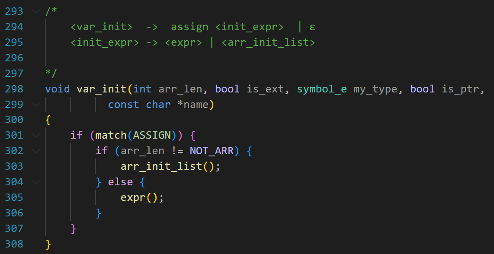
这是 var_init 之前的代码。为什么说这个地方适合创建变量呢？因为这个函数的参数收集了变量的各种特性，包括数组长度、是不是 extern、变量类型、是不是指针、变量名字是什么等。
为了创建变量并把它加入变量表，我们需要改动代码。修改后如下图：
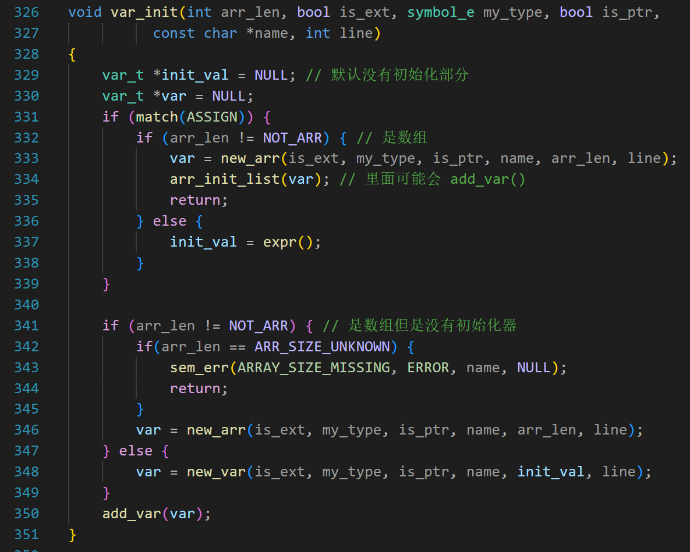
这个函数细分为四种情况。
- 带有初始化，变量是数组
- 带有初始化，是普通的变量
- 没有初始化，变量是数组
- 没有初始化，是普通的变量
情况 1 最复杂，我们最后说；
情况 2，第 337 行，用 expr() 函数解析初始化表达式。之前 expr()并没有返回值，但是现在不得不加上了，这是因为任何表达式（void 类型除外）都有一个特定的值；expr()函数的返回值来自哪里，后面再说，总之现在把它的返回值赋值给 init_val 这个变量。然后会执行第 348 行，调用 new_var 函数创建变量。
情况 3，第 341 行的条件成立，如果没有指定数组的大小，就报语义错误并返回；否则，执行第 346 行，调用 new_arr 函数创建数组类型的变量。
情况 4，执行第 348 行，调用 new_var 函数创建变量，因为没有初始化，所以参数 init_val 的值是 NULL；
不管是哪种情况，都要把创建好的变量加入变量表。
对于情况 2，3，4，执行第 350 行，调用 add_var 变量加入变量表。
对于情况 1，加入变量表是在第 334 的 arr_init_list 函数里面做的。
add_var
哈希表有了，变量也有了，可以编写把变量加入变量表的函数了。
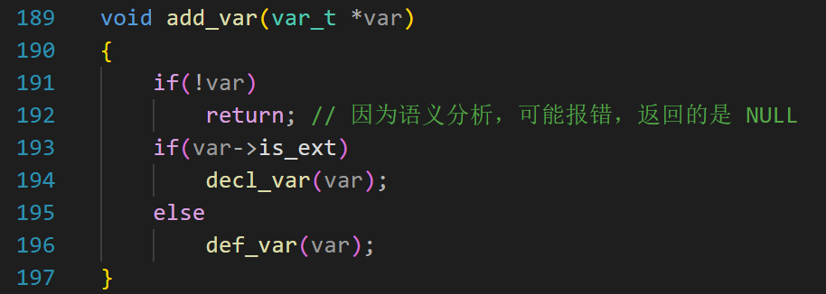
如果有语法错误或语义错误，向 add_var 传入的参数可能是 NULL。例如前文的 new_var 函数，发现缺少标识符则返回 NULL。所以第 190 行要判断一下，如果 var 是 NULL 就直接返回。
对于有 extern 声明的变量，执行第 194 行；否则执行第 196 行。
decl_var 和 def_var 这两个函数有点烧脑，本节先不讲。只要知道它们的作用是把变量加入变量表就行，并且把变量的地址加入了 var_tab_head 这个链表，目的是记录变量或者常量加入变量表的先后顺序。
数组的初始化
现在我们解决前面的难题：“如果变量是数组，且带有初始化”这种情况。
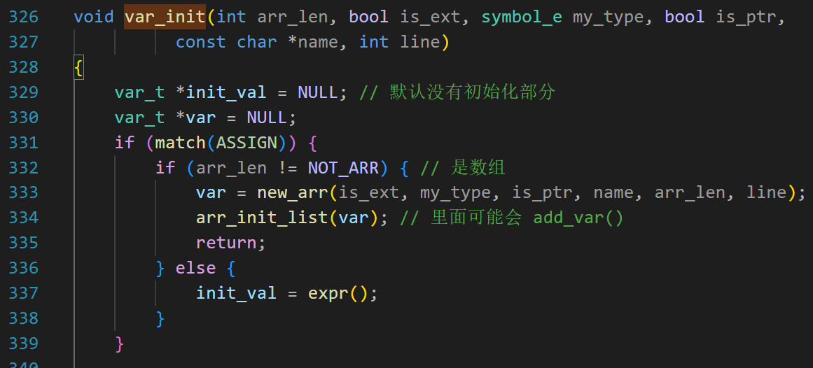
第 333 行，先调用 new_arr 创建变量，arr_len 这个参数可能是 ARR_SIZE_UNKNOWN（没有指定数组大小），也可能是某个数字；
arr_init_list 这个函数和以前的也很不一样了：
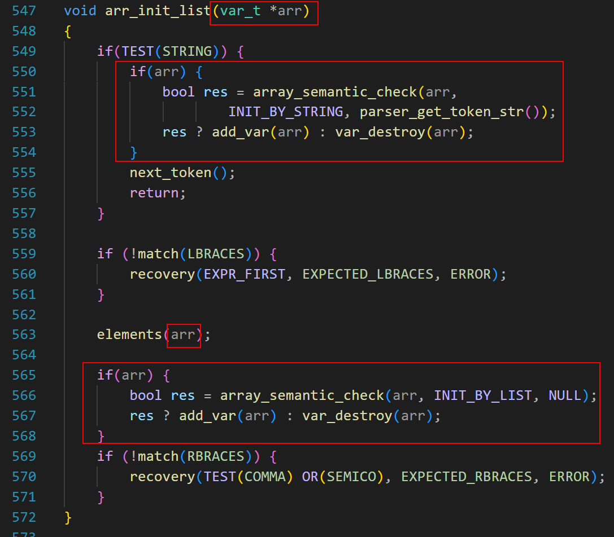
红色框框出来的，都是新加的代码。在解释代码之前，先介绍通用链表。
通用链表
细心的读者一定发现了:为了使用 Linux kernel 的链表，首先要定义一个头节点，其次宿主结构体里面要有 struct list_head；
那么问题来了，是不是我们定义的结构体里面都要加上 struct list_head？除非这个数据不会加入任何链表。
还有第二个问题，比如 var_t，除了把它加入变量表，我还想把它加入另一个链表怎么办？那就要在里面再加入一个 struct list_head，但是要另外起个名字。例如：
1 | |
第 2 行的 hnode 用于加入哈希表；
第 3~5 行的 node1~node3 用于加入三个不同的链表。
感觉很麻烦，而且释放内存也是个难题，需要检查这个节点不在任何一个链表上才能释放它占用的内存。
为了解决上面这些问题，我设计了结构体 struct gp_node，gp 是通用（general purpose）的意思。后文称这种结构为通用链表（我自己起的名字）。
1 | |
第 2 行是链表节点，第 3 行的 addr 是用户数据的地址，为了兼容各种类型，所以是 void * ；
然后，我编写了函数 gp_node_add_tail
代码如下：
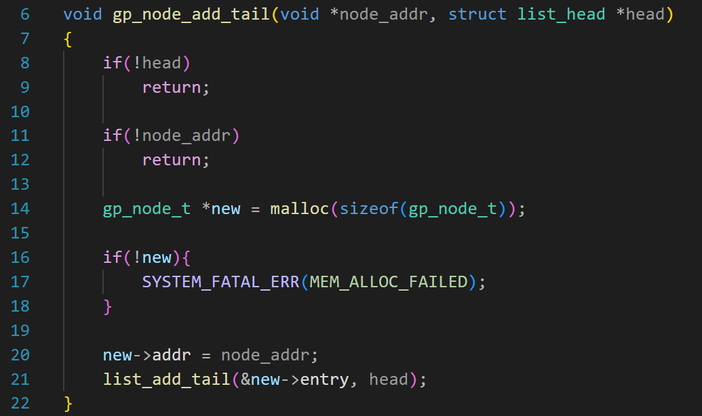
第 14 行分配内存，第 20 行填写地址（注意，这相当于把数据地址复制了一份），第 21 行把节点加入到链表的末尾。
不管是什么类型的数据，都可以用此函数把数据的地址加入到某个链表中（注意，一个链表里面的数据类型要一致）。
例如，我们要收集数组的初始化值，arr_init_val 是头节点，假设代码是 int a[] = {1, m, n};
大括号里面的 3 个初始值会通过 expr() 解析（后文马上说），返回 3 个 var_t 类型的变量；根据我的设计，利用 gp_node_add_tail 函数把这 3 个 var_t 类型的变量加入 arr_init_val 链表。
当把这 3 个变量加入链表后，示意图如下图：
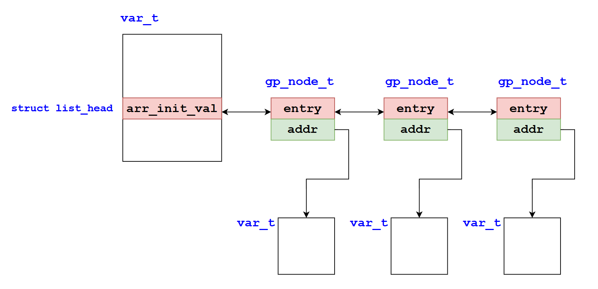
粉色部分是链表节点，它们都是 struct list_head 类型（首尾相连的指针我没有画）。
绿色部分是用户数据的地址，也可以理解为指向实际数据的指针；
当访问具体数据的时候，先找到链表的头节点，然后遍历链表，得到每个 gp_node_t 的地址，再找到 addr 字段，把它转换成要访问类型的指针，最后访问数据。
再回到前面的函数 arr_init_list ，它调用了 elements()
1 | |
之前 elements、ele、elements_tail 这 3 个函数都不带参数(为了说明语法分析，我全给删了)，但是现在都要加上参数，参数就是 new_arr 函数的返回值。
重点是 void ele(var_t *arr) 函数。
1 | |
第 6 行，解析表达式，expr() 这个函数会创建变量，如果创建成功则返回指向变量的指针，否则返回 NULL
第 7 行的判断是必须的。原因是如果 var 为空，说明表达式解析的过程中遇到了语法或语义错误，这不是有效的初始化值，就不加入 arr_init_val 链表了；如果 arr 为空，那么执行第 8 行会导致段错误，所以要检查 arr 不是 NULL；
第 8 行，把第 6 行的得到的 var 加入到 arr->arr_init_val 这个链表中。
有的同学会思考 expr() 这个函数里面究竟干了什么，也有的同学会思考第 6 行的 var 要不要加入符号表。
对于 expr() 这个函数，先不用管，等学完了中间代码生成就都明白了。
对于第 6 行的 var 要不要加入符号表，其实 var 仅仅是 expr() 的返回值，可以肯定的是在 expr() 中创建了这个变量。真实情况是在创建这个变量之后，也把它加入了符号表。这个问题我们在后面还会讨论。
再回到函数 arr_init_list
第 551 和 566 行，调用 array_semantic_check，这个函数的作用是检查数组元素的类型是否和初始化数据的类型相匹配。这属于语义分析。
1 | |
第 552 行的参数 INIT_BY_STRING 表示用字符串初始化字符数组。例如char my_str[] = "hello";
第 566 行的第二个参数 INIT_BY_LIST 表示用{…} 初始化数组。
第 553 和 567 行，如果语义检查通过，res 就是 true，这时候把 arr 添加到变量表，否则调用 var_destroy，释放内存。
由此可见，语义分析和符号表管理不是孤立的，而是交织在一起的。例如在把变量添加到符号表之前，需要检查语义是否正确，若正确才能把变量加入符号表。
array_semantic_check
这个函数比较长，我们一段一段看。
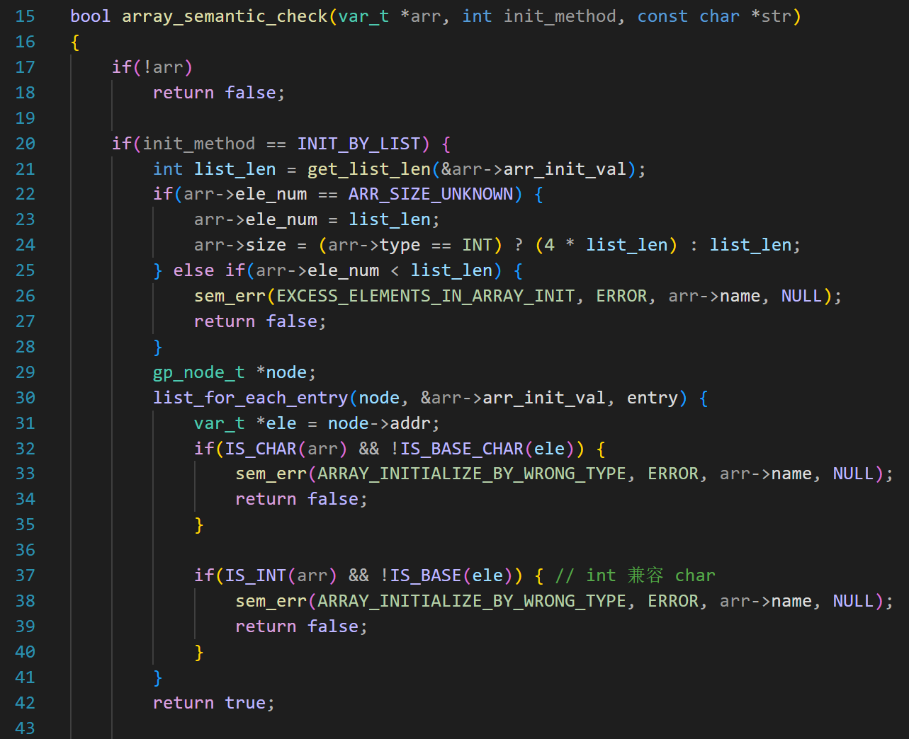
如果是用 {…} 这种方式初始化，则第 20 行成立；
第 21 行，获取链表的长度，也就是初始化列表中元素的个数;
第 22 ~ 25 行，如果定义数组的时候[]里面为空，那么现在的链表长度就是元素的个数，此时修改 arr->ele_num 和 arr->size 字段的值。
第 25 ~ 27， 如果定义数组时指定的元素个数小于初始化列表中元素的个数不相等，则报错。
30 ~ 41 是元素类型检查。遍历链表的每个用户节点 node ，根据 node->addr 找到初始化列表中的元素；
我定义了一组宏
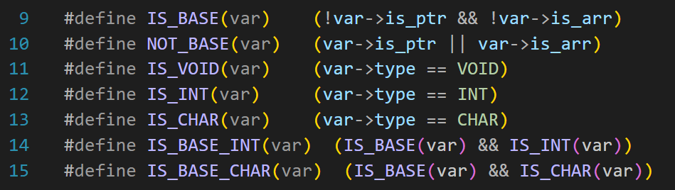
第 9 行：基本类型指既不是数组也不是指针；
第 10 行：非基本类型指数组或者指针；
再回到上面的代码。第 32 行，当数组类型是 char 的时候，初始值也必须是 char 类型，否则报错；
第 37 行，当数组类型是 int 的时候，初始值可以是 char 或 int，否则报错；
需要说明的是，上面展示的代码不是最终的代码，因为数组的元素还可以是 char 类型或者 int 类型，这牵扯到解析初始值并生成一元表达式，我们后面会讲。这里先跳过。
这个函数有返回值，返回 false 表示有错误，返回 true 说明检查通过。
如果用字符串初始化，则执行下面的代码：
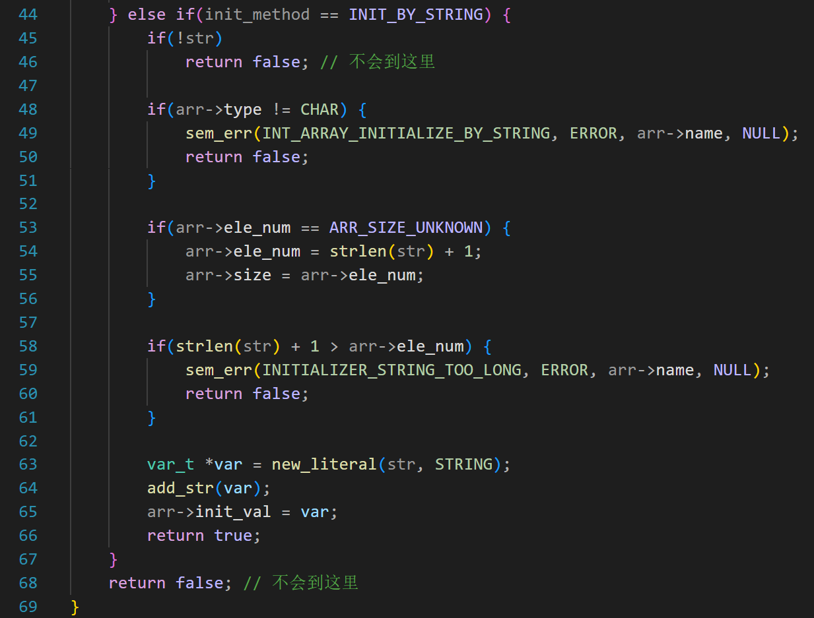
第 48 行，如果不是字符数组就报错；因为只有字符数组才可以用字符串初始化；字符类型的指针也可以用字符串初始化，但是现在说的是数组。
第 53 行，如果定义数组的时候[]里面为空，那么字符串的长度再加一就是数组长度。
第 58 行，虽然给数组指定长度了，但是长度容纳不下字符串，也报错。
第 63 行，创建字符串常量，new_literal 后面会讲。
第 64 行，把创建好的字符串常量添加到字符串表中。
第 65 行，设置数组的 init_val；表示它用 init_val 指向的常量初始化。
这里多说一句，判断数组是否带初始化，需要检查数组的 init_val 字段和 arr_init_val 字段；当 init_val 为 NULL 且 arr_init_val 链表为空时，说明不带初始化。
primary_expr
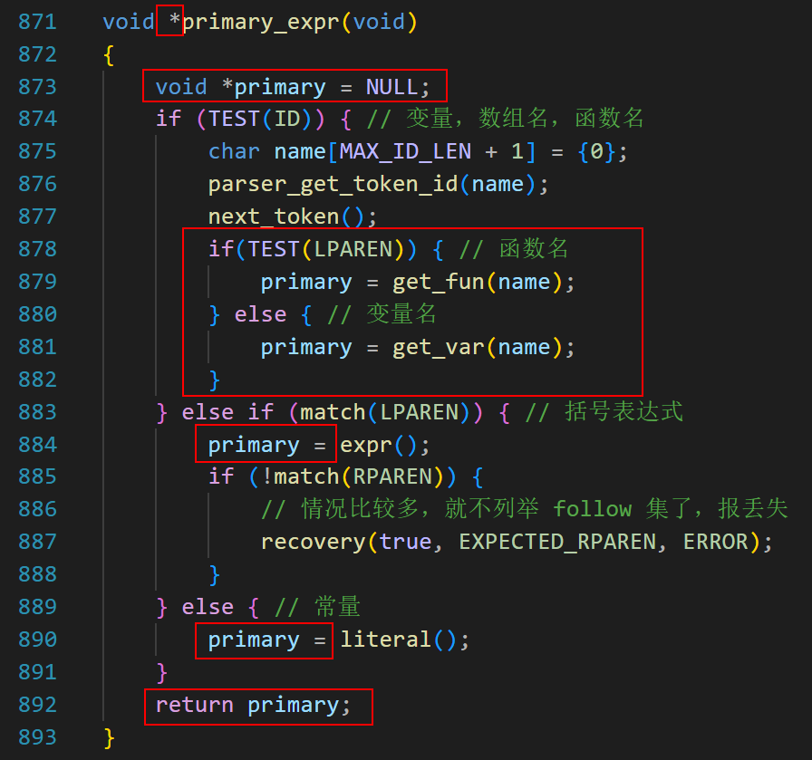
1 | |
primary_expr 这个函数在前面没有讲过，现在补补课。产生式也列出来了，不复杂，就三种情况，要么是标识符，要么是用括号括起来的<expr>，要么是常量;分别对应第 874、883、889 行。
不管是哪种情况，都应该返回一个值，例如返回标识符（var_t 或者 fun_t(函数类型，下节课讲)），或者返回一个表达式的值（var_t 类型），或者返回常量（var_t 类型）。如果是标识符，需要查找变量表或者函数表。如何判断是变量还是函数呢？
第 878 行，向前看一个 token，如果是“（”说明是函数，否则肯定变量。（请读者思考这句话对不对。）
请看下面的代码：
1 | |
第 6 行的 p_fun 是一个指向函数的指针，把 my_fun 赋值给它，没有问题。你瞧，my_fun后面就没有“（”；
不过 csub 不支持指向函数的指针，这种情况应该不存在。那我们再看个例子：
1 | |
请问上面的代码是否合法，答案是合法，虽然这段代码没有什么实际的作用。
第 7 行，my_fun 本来是一个函数指示符，这里会自动转换为指向函数的指针，这个指针的求值结果（函数的地址）会被丢弃。
所以，上面 878~882 的代码有问题。
请看下面的代码：
1 | |
请问第 9 行的标识符是指哪一个？是第 1 行定义的函数还是第 8 行定义的局部变量？
如果是前者，那第 10 行的写法应该没有问题，事实上， gcc 报错：
error: called object ‘my_fun’ is not a function or function pointer；并且还会提醒你这个 my_fun 是在第 8 行声明的。
由此可见，第 9 行的标识符是指第 8 行定义的局部变量。
我们再修改代码：
1 | |
上面的代码没有问题，可以编译过。
说明第 11 行的 my_fun 就是第 10 行声明的 my_fun
所以，代码中若出现某个标识符，需要去函数表和变量表中查找，找到离它所在作用域最近的那个同名符号，才是它指代的符号。
而不是说看看它后面有没有“（）”，有就去函数表里面找，没有就去变量表里面找。
有的同学会问，有没有可能同时有名字相同的函数和变量离它一样近。
1 | |
请看上面的代码。
这是合法的吗？
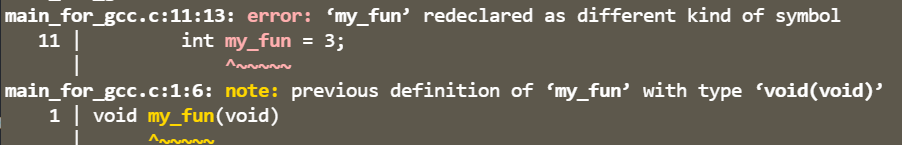
gcc 会针对第 11 行报错：error: ‘my_fun’ redeclared as different kind of symbol
所以，我修改了代码：

第 892 行，调用
void *get_var_or_fun(const char *name, int *symbol_type)
去函数表和变量表查找符号。找到的可能是函数，也可能是变量。所以第二个参数是输出型参数，需要 get_var_or_fun 里面给这个地址填写合适的值。
get_var_or_fun 的代码我们下节再讲。现在我们把关注点移到 primary_expr 函数的最后，第 907 行，它调用了 literal()
literal
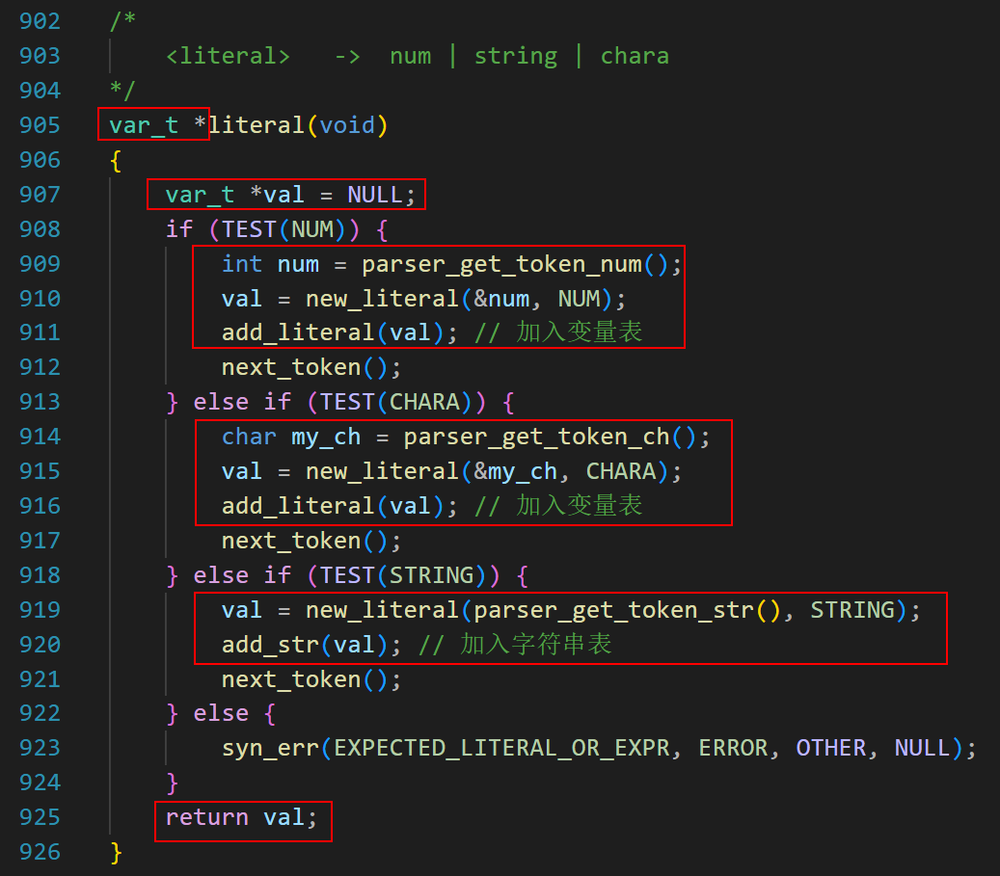
这个函数的目的是解析常量，包括整形常量、字符常量和字符串常量，利用 new_literal 函数构造各种常量，然后把它们加入符号表。
第 911 行调用了 add_literal,代码如下：
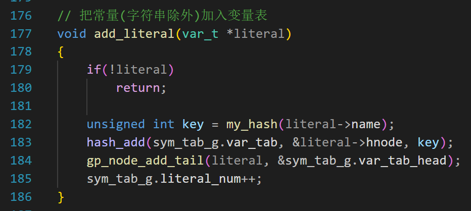
虽然是常量，但是我的设计是把它们加入变量表，因为有 is_literal 字段为真标记，不会和真正的变量混淆。
第 184 行，就是前面讲的通用链表，把参数 literal 加入 var_tab_head 这个链表，目的是为了记录变量或者常量的添加顺序。打印变量表的时候我们按照这个顺序来打印，可以和测试代码对照着看。
add_str 函数的代码如下：
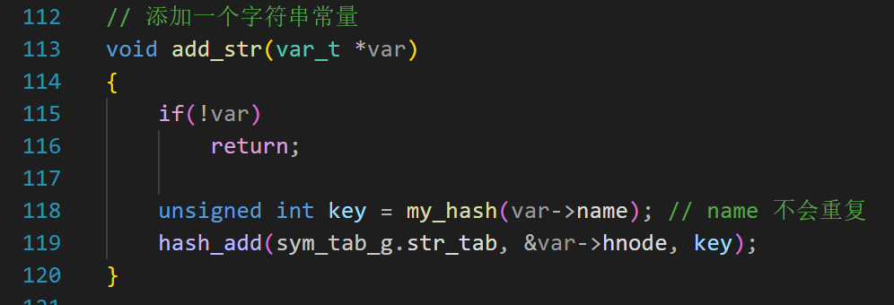
把字符串加入了 str_tab,就是串表。
main 函数
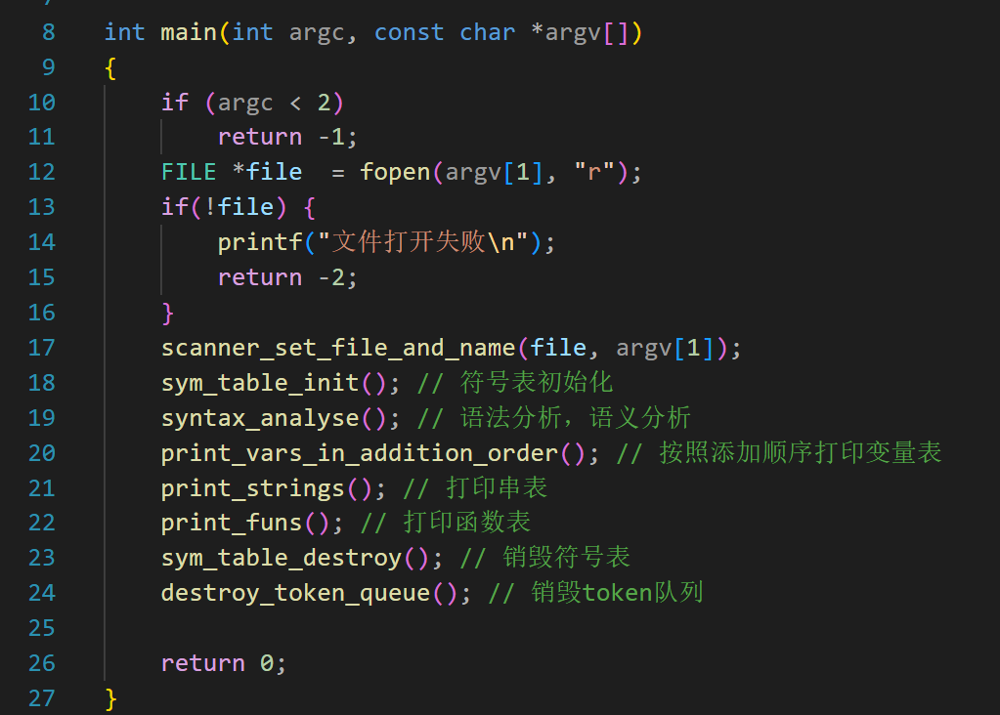
我已经写了注释，不再赘述。
expr() 函数的返回值
表达式的解析涉及创建中间变量和中间代码生成，这部分比较复杂，目前的代码还不包括这些功能。
从产生式<expr>一直推导下去，会推导出基本表达式
1 | |
<literal> 对应上面的 literal 函数
如果表达式为常量，调用 expr() 函数可以得到正确的值，否则 expr() 的返回值是 NULL（这是不对的，需要后面完善代码）；这里面的原因就不赘述了，有兴趣的同学可以看这一节的配套代码。等后面学习中间代码生成的时候，还会讲解表达式的代码。
成果展示
语义错误
下面我们故意写一些错误的代码，看看程序能否检查出这些错误。
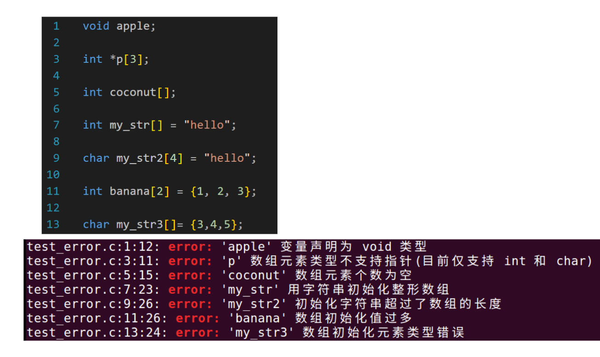
效果还不错，都检查出来了。
打印变量表
var_tab_head 这个链表，纯粹是为了打印出来容易看。
因为变量表中的变量很多，而且是根据 name 映射到不同的 key （分到不同的桶）。如果使用 hash_for_each 遍历，顺序就显得乱，和测试代码对照起来很困难。
如何根据变量的添加顺序打印符号表呢？
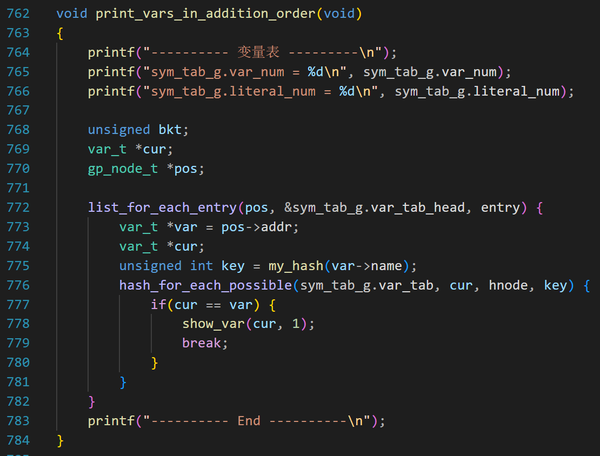
第 772 行，遍历 sym_tab_g.var_tab_head 这个链表，得到变量的地址 var;有了变量的地址，就知道要打印什么变量了，因为地址是唯一的。
第 775 行，根据 var->name 计算出 key
第 776 行，遍历哈希表中和 key 值对应的桶，注意，同名变量可能有一个或多个，我们需要比较地址是不是和 var 相等
如果地址 cur 和 var 相等，说明找到了对应的变量，调用 show_var 打印这个变量的信息，之后 break,继续遍历 var_tab_head 链表。
show_var 这个函数就不赘述了，有兴趣的同学可以下载代码研究。
测试代码：
1 | |
运行结果：
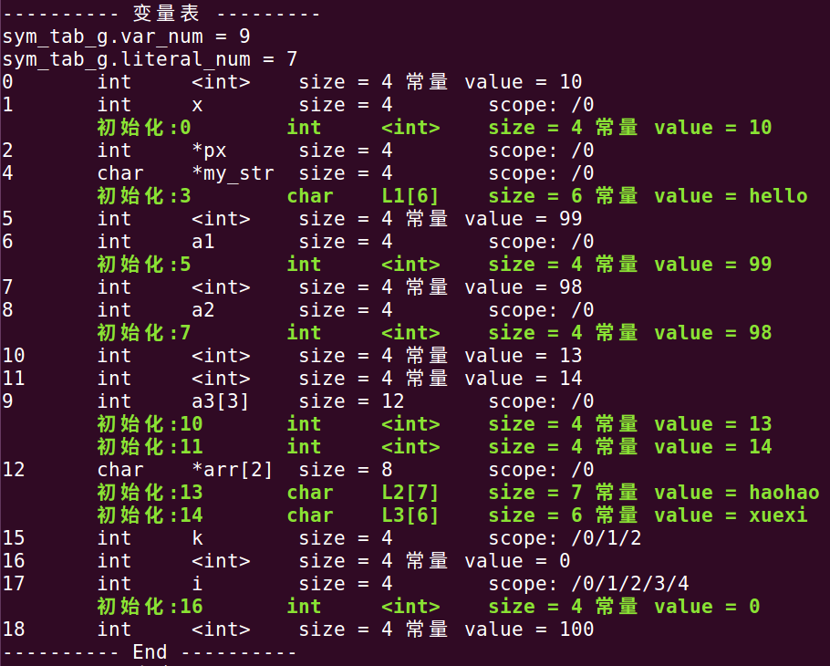
最左边这列是变量的编号（var->index，此字段在创建变量的时候赋值）
然后是变量类型、名字、size、作用域，如果是常量就会写明常量和 value
如果是带有初始化的变量，则换行缩进，打印由哪个常量初始化（绿色部分）。
本文到这里就结束了。后面我们会继续修改代码，学习更多内容。